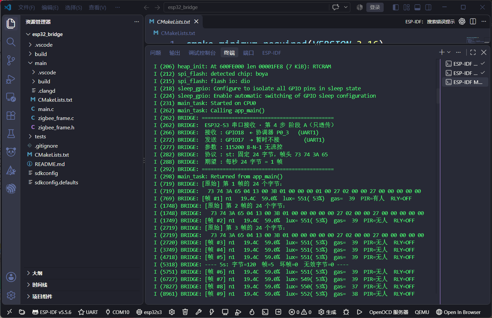
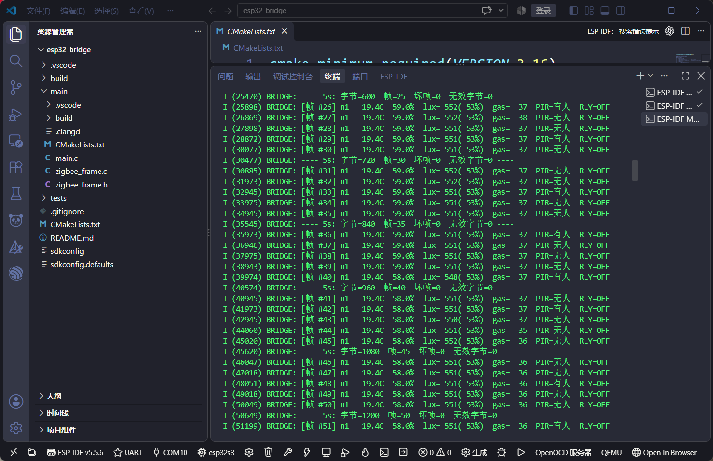
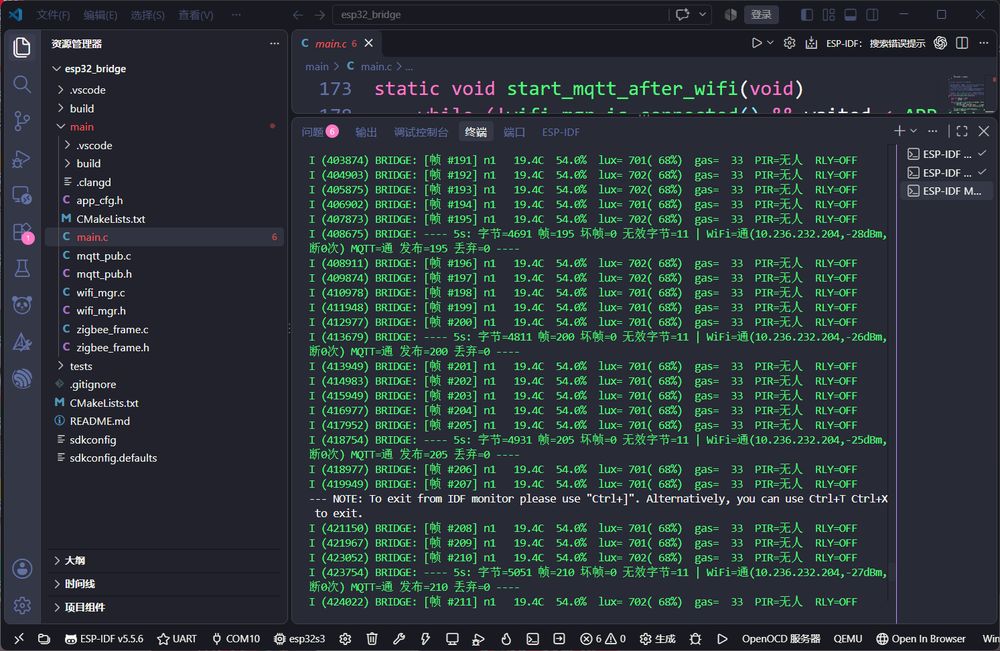
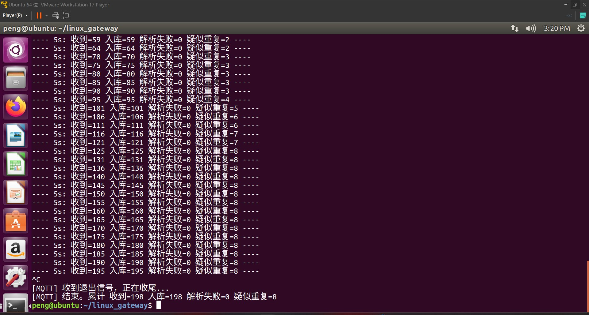
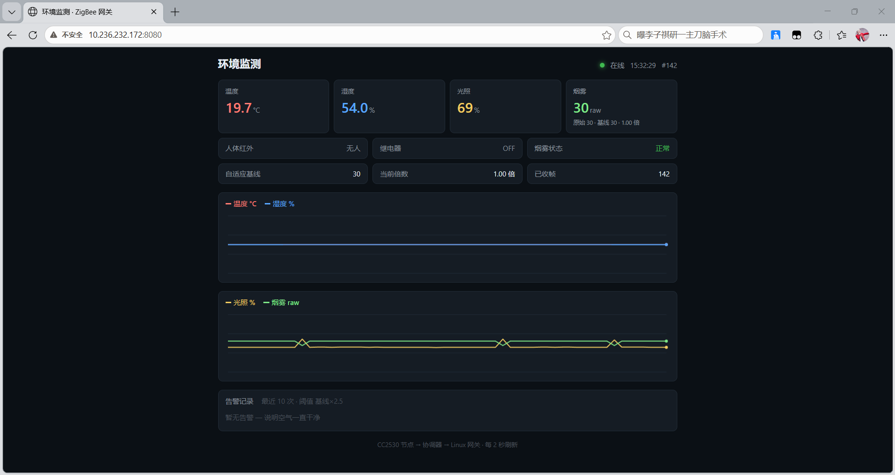

前四步做完，数据已经能从电池供电的节点一路走到 Ubuntu 上的网页曲线里。 但那条路依赖一根 USB 线——协调器必须插在电脑上。第 4 步要做的是把这一层换成 ESP32：协调器的串口信号并联出来喂给 ESP32，ESP32 通过 WiFi 走 MQTT 上云。
功能本身不复杂，一天能写完。真正花掉时间的是四个和代码完全无关的坑—— 而且每一个的第一个错误结论都是错的。这篇把这四个坑的排查过程完整写下来， 因为它们比功能代码本身有价值得多。
这一阶段的源码在
code/esp32_bridge/，
服务端的 MQTT 订阅程序在
code/linux_gateway/mqtt_sub.c，
固定 Ubuntu 地址的脚本在
set_static_ip.sh。
一、为什么要在中间插一层 ESP32
最直接的做法是让协调器一直插在 Ubuntu 机器上，串口读数据。演示能跑， 但有两个说不通的地方：
- 位置被锁死。协调器的射频覆盖范围决定了它必须放在被测现场， 而现场没有一台常开的 Ubuntu 机器。
- 数据只在一台机器上。没有远程访问、没有多客户端、没有告警推送， 这套东西永远只能演示给别人看，不能交付给别人用。
ESP32 补的正好是这一段：有 WiFi、有 UART、几十块钱、功耗低到能挂充电宝。 它在整条链路里的位置是一段协议转换—— 左边是私有的 24 字节定长帧，右边是标准 MQTT，中间做的只有解析和重新封装。
CC2530 终端 ──ZigBee──> 协调器 P0_3
│
├──> CH340 ──> USB ──> Ubuntu 网关（继续跑，写 env_data）
│
└──> GPIO18 ──> ESP32-S3 ──WiFi──> MQTT ──> Ubuntu（写 env_data_mqtt）
env_data 和 env_data_mqtt
两张表里。两边同一时刻的数值应该几乎相同——
不一样就说明中间某一段坏了，而且能立刻判断是串口那条坏了还是 WiFi 那条坏了。
这是单链路永远给不了的诊断能力。
二、接线：从协调器排针上并联取信号
协调器板上有四个 2×6 排针（P1/P2/P3/P4）。核对原理图网表后发现
P0_2 和 P0_3 是多点复用的：它们同时连着
LED3/LED4、排针 P2、排针 P4、以及 CH340 的 TXD/RXD。
这意味着可以直接从 P4 排针上取信号，而不必断开 CH340。 核心板插在 P1+P2 上，P4 是空着的，正好用。
| 协调器 | ESP32-S3 | 作用 |
|---|---|---|
P4 排针 · 第 4 行左列（印 P03） | GPIO18（U1RXD） | 数据：协调器发，ESP32 收 |
P4 排针 · 第 1 行右列（印 GND） | GND | 共地，必须接 |
P4 排针 · 第 1 行左列（印 11） | — | 3V3，不要接（两边各自供电） |
P02 / P03 / GND），按丝印找最稳。
我一开始按「从 LED 端往 TFT 方向数第几行」推，结果发现物理编号 11/12 那一行
在靠近 LED 的那一端——而 3V3 就紧挨着 GND，
数错一格就是电源接电源。
还有一个顾虑是「LED3/LED4 并联在这根线上会不会影响通信」。看电路就放心了：
3V3 → 330Ω → LED → P0_x，引脚拉低时LED 才亮（约 4mA），
空闲高电平时 LED 不导通、不构成负载。CH340 本来就在这条线上正常收数，
再并一个 ESP32 的 RX 是「一驱两收」，电气上没有问题。
另外，第 4 步只需要一根信号线。
GPIO17 → P0_2 那条反方向的路暂时不接——那条路是第 5 步远控继电器才需要的，
而且到时会撞上一个真问题：CH340 的 TXD 和 ESP32 的 TX 会两个输出顶在同一个网络上。
那时候再换 UART 或者加二极管隔离，现在不提前处理。
三、坑一：设备管理器里有 COM10，但板子根本没通电
这是整个过程里最浪费时间的一个，因为它的第一个错误结论是： 「COM 口都在，肯定是驱动和下载模式的问题」。
现象：VSCode 的 ESP-IDF 插件点 Flash，等半天，报
Connecting.... A fatal error occurred: Failed to connect to ESP32-S3: No serial data received.
看起来很典型的「没进下载模式」。于是按标准流程操作：按住 BOOT → 点一下 RST → 松开 BOOT → 点 Flash。还是同一个错。
但有一条很刺眼的反证：同一块板子，用别的烧录软件（比如厂商的 Flash 工具） 却能正常识别并下载。如果真是「手柄进不了下载模式」， 那别的软件也应该失败——它靠的是同一套 DTR/RTS 时序。
于是不再猜，直接写脚本测。写了三个诊断脚本：
| 脚本 | 做什么 | 结论 |
|---|---|---|
tests/peek_port.py |
打开串口读 4 秒，打印字节数与可见字符 | 0 字节，板子一句话都不说 |
tests/scan_port.py |
依次试 115200 / 74880 / 9600 / 460800 / 57600 五档波特率 | 五档全 0 字节，不是波特率问题 |
tests/probe_bootloader.py |
试 6 种 DTR/RTS 组合，再直接发 ESP32 ROM 的 SYNC 同步包 | 全部无回应，连 ROM 都没醒 |
关键在第三个脚本。probe_bootloader.py 里手写了 ESP32 ROM 的同步握手包：
C0 + 0x08 + 0x28 0x00 + 校验 + 波特率 + 32 个 0x55 + C0。
如果芯片还活着，哪怕只是在 ROM 里跑，它一定会回一串固定格式的应答。
一个字节都没有，说明芯片没有在跑。
COM10、设备管理器里干干净净；
但 ESP32-S3 的主芯片需要开发板上那路 3.3V（来自稳压器或板上的供电跳线/开关），
这一路没给电，主芯片就是一块石头。插上 USB ≠ 板子有电。设备管理器能看到 COM 口， 只证明「转串口芯片活着」，完全不能证明「主芯片活着」。
给了电之后，第一个能拿到的铁证是 ROM 的启动日志：
rst:0x1 (POWERON),boot:0x8 (SPI_FAST_FLASH_BOOT)
SPIMEM:0xee
mode:DIO, clock div:1
...
entry 0x403c8918
rst:0x1 (POWERON) 是上电复位——
只有芯片真的被上电才会有这个值。手动按 RST 是 rst:0x3，
看门狗是 rst:0x8。所以以后判活只需要看这一行：
能看到 POWERON，就说明供电和串口两件事都是通的。
四、坑二：esptool 每次自己把手动下载模式踢掉
供上电以后能烧了，但必须每次都按一遍「BOOT + RST」，否则还是
No serial data received。查下去发现是两件事叠在一起。
第一件：这块板子的自动下载电路不通
标准的 ESP32 开发板会把 USB 转串口的 DTR / RTS
接到 EN 和 IO0 上，靠两个三极管的时序组合，
由 esptool 自动完成「复位 → 进下载模式」。
这块板子上这两个控制线拉不动 EN/IO0，所以只能人工按。
用别的软件能烧，是因为那些软件用的是「手动进模式 + 立刻连」的保守流程，
不依赖 DTR/RTS。
第二件（才是真凶）：--before default_reset 的语义
esptool 默认带 --before default_reset，
意思是在建立连接之前先复位一次板子。
你刚刚手动按住 BOOT、点 RST 进的那个下载模式，
正好被这行复位命令踢出去了，于是连接阶段对着一个正常运行的芯片发呆，
超时，报 No serial data received。
修法不是继续跟按键顺序较劲，而是把复位关掉：
# sdkconfig.defaults # 烧录前不要自动复位板子 CONFIG_ESPTOOLPY_BEFORE_NORESET=y
改完 sdkconfig 里应当出现
CONFIG_ESPTOOLPY_BEFORE="no_reset"，
烧录命令行里会带上 --before no_reset——
esptool 从此完全不碰复位线，保持你手动进入的下载模式。
五、坑三：新版 EIM 安装器装完，idf.py 找不到工具链
ESP-IDF 现在用 EIM（Espressif Installation Manager）安装， 目录布局和老式的离线安装器不一样，网上的教程基本都还是老布局，照抄全踩。 本机实测遇到三个连锁问题：
| 现象 | 根因 | 解法 |
|---|---|---|
export.bat 报 This .bat file is for Windows CMD.EXE shell only |
它是 CMD 专用脚本，Git Bash 里跑不了 | 用 PowerShell，或直接用 VSCode 插件 |
直接跑 idf.py 报 MSys/Mingw is no longer supported |
ESP-IDF v5 检测到 MSYS 环境直接拒绝，不是警告是硬退出 | 同上，别在 Git Bash 里跑 |
ERROR: espidf.constraints.v5.5.txt doesn't exist |
EIM 把它放在 C:\Espressif\tools\ 下，而 idf_tools.py 去 $IDF_TOOLS_PATH 根目录找 |
复制一份到 C:\Espressif\ |
CMAKE_C_COMPILER xtensa-esp32s3-elf-gcc is not a full path and was not found in the PATH |
EIM 不生成 tools.json，而且工具链目录名带 esp- 前缀（xtensa-esp-elf\esp-14.2.0_20260121\），idf.py 靠目录名自动发现必然失败 |
手工把 ...\xtensa-esp-elf\bin 加进 PATH |
全套 PATH 其实硬写在
Microsoft.v5.5.6.PowerShell_profile.ps1 里，
打开就能看到需要加哪些目录——比在报错信息里猜快得多。
结论：在 VSCode 里用 ESP-IDF 插件操作最省事，
插件自己会准备好环境。只有在需要跑 idf.py 原生子命令
（比如 menuconfig）时才需要手工补 PATH。
六、阶段 A 验收：60 帧、1440 字节、零坏帧
分两步走。阶段 A 只做透传：ESP32 从 GPIO18 读字节、找帧头、 解析 24 字节、打印到串口。不碰 WiFi、不碰 MQTT。 这样出问题时可以确定是串口这一段的问题，不会和网络问题混在一起。
开机横幅把参数全打在台面上，一眼就能确认配置对不对：

rst:0x1 (POWERON) 之后的第一件事就是把参数和第一帧原始字节打出来。
注意 main_task: Returned from app_main()——app_main
只负责创建任务，创建完就该返回，不该在里面死循环
每帧都先打 24 个原始字节，再打解析结果。这是故意的： 解析错了要能看出是哪个字节读错，而不是只看到一个可疑的温湿度。
BRIDGE: [原始] 第 1 帧 的 24 个字节: 73 74 3A 65 04 13 00 38 01 00 00 00 00 00 27 02 00 00 27 00 00 00 00 00 00 BRIDGE: [帧 #1] n1 19.4C 59.0% lux= 551( 53%) gas= 39 PIR=有人 RLY=OFF BRIDGE: [帧 #2] n1 19.4C 59.0% lux= 551( 53%) gas= 39 PIR=无人 RLY=OFF BRIDGE: [帧 #3] n1 19.4C 59.0% lux= 551( 53%) gas= 39 PIR=无人 RLY=OFF ... BRIDGE: ---- 5s: 字节=120 帧=5 坏帧=0 无效字节=0 ---- BRIDGE: ---- 10s: 字节=240 帧=10 坏帧=0 无效字节=0 ---- BRIDGE: ---- 15s: 字节=360 帧=15 坏帧=0 无效字节=0 ---- ... BRIDGE: ---- 50s: 字节=1200 帧=50 坏帧=0 无效字节=0 ---- BRIDGE: ---- 60s: 字节=1440 帧=60 坏帧=0 无效字节=0 ----
逐字段核对一下第 1 帧那 24 个字节，可以看到整条链路上没有任何一个字段是「碰巧对上」的：
| 偏移 | 字节 | 含义 | 解析结果 |
|---|---|---|---|
| [0..3] | 73 74 3A 65 | 帧头 "st:e" | 同步成功 |
| [4..5] | 04 13 | 温度 分位 / 整数 | 19.4 °C |
| [6..7] | 00 38 | 湿度 分位 / 整数 | 约 59.0 %RH |
| [8] | 01 | 节点号 | n1 |
| [14..15] | 27 02 | 光照 ADC（小端） | 0x0227 = 551 → 53 % |
| [18..19] | 27 00 | 烟雾 ADC（小端） | 0x0027 = 39 |
| [20..21] | 00 00 | 继电器状态 | OFF |

坏帧=0 和 无效字节=0 一次都没变过
| 时刻 | 累计字节 | 累计帧 | 坏帧 | 无效字节 |
|---|---|---|---|---|
| 5 s | 120 | 5 | 0 | 0 |
| 15 s | 360 | 15 | 0 | 0 |
| 25 s | 600 | 25 | 0 | 0 |
| 35 s | 840 | 35 | 0 | 0 |
| 45 s | 1080 | 45 | 0 | 0 |
| 50 s | 1200 | 50 | 0 | 0 |
| 60 s | 1440 | 60 | 0 | 0 |
这个统计行的设计要点：把三类「坏」分开计数。
坏帧是帧头对上了但字段越界，无效字节是压根没对上帧头被丢掉的字节。
两个数都稳定为 0，说明线路干净、解析器没有在重同步——
如果只有坏帧为 0 而无效字节在涨，那就说明是丢字节导致的失步，两个数是完全不同的故障。
顺手抓到两个真实的环境变化，可以用来自证数据不是伪造的：
- 湿度缓慢下降：59.0 % → 58.0 %，发生在第 40 帧附近。
- 烟雾 ADC 单调缓降：39 → 38 → 37 → 36 → 35。 MQ-2 的加热丝温度还在往上稳，基线随之下移——这正是第 4 周做自适应基线的理由。
- 光照在 548 ~ 553 之间小幅抖动，没有跳变，ADC 采样稳定。
七、阶段 B：WiFi + MQTT 的四个决定
阶段 A 通过以后，阶段 B 才是「上云」。代码分成三个模块，各自只管一件事：
| 模块 | 职责 | 关键的坑 |
|---|---|---|
wifi_mgr.c | 连 WiFi、断线重连、暴露 IP 与 RSSI | NVS 必须先初始化；断开事件里不能直接重连 |
mqtt_pub.c | 连 broker、组 JSON、publish | 匿名访问要传 NULL 而不是空串 |
main.c | UART 读字节 → 解析 → 交给上面两个 | app_main 创建完任务要返回 |
决定一：断开后延后 2 秒重连，而不是在事件回调里立刻连
WiFi 断开事件里直接调 esp_wifi_connect() 会造成重连风暴：
路由器不在时，每一轮失败都会再触发一次断开事件，日志被刷满，
同时把 UART 的打印淹掉——你会以为串口也坏了。改成用一次性定时器延后 2 秒，
一次断开只对应一次重连尝试。
决定二：QoS 1，允许重复但不允许丢
环境数据每秒一条，丢一条不影响趋势判断，但缺一段会影响曲线。 QoS 0 是「发了就不管」，网络抖动时静默丢包；QoS 2 是四次握手，对这个场景是浪费。 QoS 1 允许重复——重复比丢失好处理，服务端加个判重日志就够了。
决定三：掉线检测用 MQTT 遗嘱（LWT），不自己轮询
ESP32 连上 broker 时同时注册一条遗嘱消息：
主题 zigbee/node1/status，内容 offline，QoS 1，retain。
一旦设备异常断线（拔电、WiFi 掉、程序崩），broker 会自动代它发出这条消息。
// 连上之后主动发 online（也带 retain） // 异常断线时 broker 代发 offline // 新订阅者一上线就能立刻知道「现在设备在不在」——这就是 retain 的作用
比「服务端定时 ping 设备」可靠得多：设备真的死掉时，ping 是 ping 不通的， 但你也分不清是设备死了还是网络断了。让 broker 来宣布死亡，语义最准。
决定四：断线期间的数据直接丢，只计数，不补发
这是个有争议的决定，先说结论：丢，但记下丢了多少条。
如果做本地缓存 + 恢复后补发，看起来「更完整」，实际上会制造一个更麻烦的问题： 服务端的入库时间是到达时间，几百条补发的数据时间戳全部挤在同一秒， 曲线上出现一根垂直的假台阶。数据看板的价值在于「什么时候发生了什么」， 而不是「一共收到了多少条」——时间错位的数据比缺失的数据更有害。
env_data（串口链路）和 env_data_mqtt（MQTT 链路）
两张表结构一致但互不干扰，各自的时间戳语义都是「我这一侧收到它的时刻」。
想补齐精确时间的话，正确的做法是在节点侧打时间戳（或者收 NTP），
而不是在网关侧补发。
八、阶段 B 验收：两条链路互相对账
「跑通了」和「可信」是两件事。真正能让人放心的，是两条链路能对上账：
同一帧数据同时走串口和 WiFi，分别落进 env_data 和 env_data_mqtt，
同一时刻的数值应当几乎相同。不一样就说明中间某一段坏了，而且能立刻判断是哪一段。
ESP32 这一侧
连续跑 7 分钟，VSCode 里 ESP-IDF 监视器的输出是这样（截图为第 198~211 帧）：

字节=5051 帧=210 坏帧=0 无效字节=11，
WiFi -27dBm、断0次，MQTT 发布=210 丢弃=0
这几个数字是可以互相验算的，这也是判断「数据是不是编的」最硬的办法：
210 帧 × 24 字节 = 5040
5040 + 11 个无效字节 = 5051 ← 和日志里「字节=5051」完全一致
那 11 个无效字节是上电瞬间收到了半个帧（插 USB 的时候协调器正在吐数据），
属于必然发生的一次性损耗，不是线路问题。真正的线路质量指标是 坏帧=0。
服务端这一侧
订阅器每 5 秒打一行，截图是按下 Ctrl+C 收尾时的画面：

收到 和 入库 每一行都相等，从 59 一路涨到 195；
解析失败 全程为 0；收尾时累计 收到=198 入库=198
| 计数 | 含义 | 这次的值 | 该怎么读 |
|---|---|---|---|
收到 | MQTT 主题上真的来了多少条 | 198 | 和 ESP32 的 发布 差 12，见下 |
入库 | 成功写进 SQLite 多少条 | 198 | 等于「收到」→ 没有写库失败 |
解析失败 | JSON 字段缺失/类型不对 | 0 | 两端字段名和口径一致 |
疑似重复 | 与上一条各字段完全相同 | 8 | 见下，不是 MQTT 重发 |
210 和 198 差 12 条，不是丢包：mqtt_sub 比 ESP32 晚启动了 12 秒，
前面那 12 帧它还没开始监听。想判断有没有真丢，只看「收到 = 入库」这一项就够了。
疑似重复 最容易让人以为是 QoS 1 在重发，其实不是。
翻原始日志就明白了——同一个毫秒、同样的数值连着出现两次：
I (68120) BRIDGE: [帧 #8] n1 20.1C 55.0% lux= 674(65%) gas= 18 PIR=无人 RLY=OFF I (68120) BRIDGE: [帧 #9] n1 20.1C 55.0% lux= 674(65%) gas= 18 PIR=无人 RLY=OFF
是协调器自己连吐了两帧：ZigBee 那边一次上报被拆成两次串口输出， ESP32 只是如实转发。所以「疑似重复」放在服务端统计是对的——它是链路的体检指标， 不是需要修的错误。
丢弃=0 是这次改代码最直接的成果。
前一天同一套逻辑跑出来是 丢弃=13：MQTT 从上电到连上花了 10718 ms，
这段时间协调器已经吐了 13 帧，而未连接时 mqtt_pub_env() 只计数不排队，
于是正好丢 13 条（10718 ÷ 800 ms/帧 ≈ 13）。修法不是加缓存补发，而是调启动顺序：先等 WiFi 拿到 IP 再启 MQTT， 这样客户端一次就连上，
丢弃 从 13 直接变成 0。
串口那条链路也一直没停
CH340 那一路从第 3 步起就在跑——gw 网关读串口、写 env_data、给网页供数据。
这是另一时刻的网页：

19.7 °C、湿度 54.0 %、光照 69 %、烟雾 30 raw，
右上角已收帧 #142
对着看串口那张（19.4C 54.0% lux=702(68%) gas=33）：
湿度完全一致，光照差 1 个百分点，温度差 0.3 °C、烟雾差 3 ——
这两张截图本来就不同时刻，差这么点才是正常的；真错位的话是整段对不上，不是零点几。
env_data 是「Ubuntu 从串口读到它的时刻」，
env_data_mqtt 是「Ubuntu 从 MQTT 收到它的时刻」，两边各记各的。
想精确到同一个瞬间，得在节点侧打时间戳（或者收 NTP），
这是在网关侧补发永远解决不了的。
九、坑四：换了热点，Ubuntu 不会自己换 IP
这一坑的现场表现极具欺骗性：ESP32 连不上 broker，Ubuntu 上
mosquitto 明明在跑、端口明明在听，网络看起来完全正常。
起因是把 WiFi 从「403」换成手机热点「ling」。
Ubuntu 是 VMware 桥接，跟着宿主机走，换网之后它应该拿到新网段的地址——
但它没有。ip addr 里还是旧网段的 192.168.110.115。
原因是 DHCP 租约没到期：dhclient 手里那张租约还在有效期内，
网卡重新起来时它直接续用旧地址，根本不会再发一次 DISCOVER。
所以「换网之后扫不到 Ubuntu」多半不是桥接坏了，而是它压根没去要新地址。
# 强制重新走一遍 DHCP sudo dhclient -r && sudo dhclient ip -4 addr show # 这时才变成 10.233.60.172/24
顺手记一个更阴的坑：旧网络里路由器自己就带了个 mosquitto（版本 1.5.9，
同样开着 1883 且允许匿名）。如果 app_cfg.h 里填成路由器地址，
数据会被它默默收下——ESP32 日志显示「发布成功」，Ubuntu 那边一条都收不到。
判断方法是裸 socket 手搓一个 SUBSCRIBE 去问 $SYS/broker/version：
Ubuntu 的 16.04 自带版是 1.4.8，路由器的是 1.5.9，一问就分得清。
那能不能干脆把 IP 钉死？能，但只对「同一个热点」有效
既然换一次热点就得改固件重烧，最直觉的做法是把 Ubuntu 设成静态 IP，
让 app_cfg.h 里的地址永不过期。这个做法有效，但边界必须说清：
| 场景 | Ubuntu 静态 IP 的表现 |
|---|---|
| 同一个热点、同一次会话里 | 有效，地址不会被 DHCP 分给别人 |
手机热点重启过（哪怕还是 ling） | 网段整个会变，见下 |
| 换到另一个热点 | 更糟：静态地址不在新网段，连网关都不通，比 DHCP 还难救 |
第二行不是推测，是第二天实测撞上的：同一个 ling 热点，前一天和第二天给的网段完全不同。
| 10-27 | 10-28（热点重启后） | |
|---|---|---|
| 网段 | 10.233.60.0/24 | 10.236.232.0/24 |
| 网关 | .236 | .59（不是 .1，也不是 .236） |
也就是说，静态 IP 连「同一个热点」都锁不死——手机重启一次，网段和网关全换， Ubuntu 的静态地址和固件里的 broker 地址同时失效，还是得重新改、重新烧。 这次两天之内就发生了两回。
所以脚本里加了一道网段校验：设之前先比对「当前默认网关」和
「配置区网关」是否同一 /24，不同就直接拒绝执行、不做任何修改。
换过热点的人跑它会看到一条明确的提示，而不是稀里糊涂把网络配死。
配完还会 ping 三下网关，通不过就自动回滚成 DHCP。
# 只看现状（安全，什么都不改） sudo bash set_static_ip.sh --show # 钉死成 10.236.232.172（要和固件 app_cfg.h 里的 APP_MQTT_URI 一致） sudo bash set_static_ip.sh # 出问题时退回自动获取 sudo bash set_static_ip.sh --dhcp
真正的解法是别在固件里写 IP：让 ESP32 用 mDNS 解析
ubuntu.local，地址由 Ubuntu 自己广播，换任何局域网都能找到。
这是第 5 步之后要做的事。
十、已知限制
-
app 分区只剩 13%。
esp32_bridge.bin约 896 KB（0xdff20），factory 分区 1 MB， 剩0x200e0。下一步加 SNTP + TLS 之前， 需要先把factory分区调大，否则会链接失败。 - 没有 CRC，意味着约 3% 的帧会被整帧丢掉。 协议里只有帧头和字段范围校验，24 个字节里任何一个被打歪， 整帧就得丢弃并计入「无效字节」。实测 99 帧里坏 3 帧、129 帧里坏 2 帧， 都是这个量级。这是当初省掉 CRC 的设计代价，不是 bug—— 要根治得改两端协议，属第 5 步一起做的事。
- QoS 1 会重复。 服务端目前只统计「疑似重复」不删除。要做严格去重，得在帧里加序号字段—— 那要改 CC2530 侧的协议，留到后面一起做。
- ESP32 侧没有本地时间。 时间戳全部由服务端在收到时打，所以 MQTT 链路的时间精度取决于网络延迟（局域网内是毫秒级，够用）。
-
反方向还没接通。远控继电器需要
GPIO17 → P0_2这条路， 并且要解决 CH340 TXD 与 ESP32 TX 的输出冲突，是第 5 步的事。
十一、这轮的收获
-
设备枚举成功，不等于设备在工作。
COM 口只证明「USB 转串口芯片」活着。要证明主芯片活着，
得看它自己说过的话——ROM 的
rst:0x1 (POWERON)是唯一铁证。 - 「别的软件能行」是排查里信息量最大的一句话。 它一刀切开「硬件坏了」和「流程不对」，比读十遍报错有用。
-
报错文案不等于错误原因。
No serial data received有三种完全不同的成因：芯片没电、没进下载模式、 进了但被工具自己复位踢出来。只看文案会挨个试错， 写个探针脚本发一次 SYNC 包，5 秒钟就能排除掉前两种。 - 分阶段验收省下的时间远大于多花的工夫。 阶段 A 只测串口、阶段 B 才上网络。如果一开始就全写在一起， 出问题时「串口没数据」和「MQTT 连不上」的症状会互相掩盖。
-
统计行要按「故障类型」分列计数。
坏帧和无效字节分开算，才能从「都是 0」 或者「只有一个是 0」里读出线路质量。 -
红色的 ERROR 不一定是要修的错误，但一定得处理。
MQTT 客户端启动时 WiFi 还没拿到 IP，必然刷一条
E esp-tls: Host is unreachable，5 秒后自己就重连上了。 它对功能无害，却会把真正该看的红字埋掉—— 现场排障最怕的不是报错，而是报错里一半是噪音。 按下「等 WiFi 就绪再启 MQTT」这个顺序改完之后，这条红字再也没出现过。